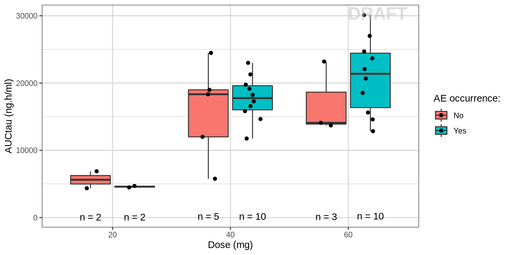
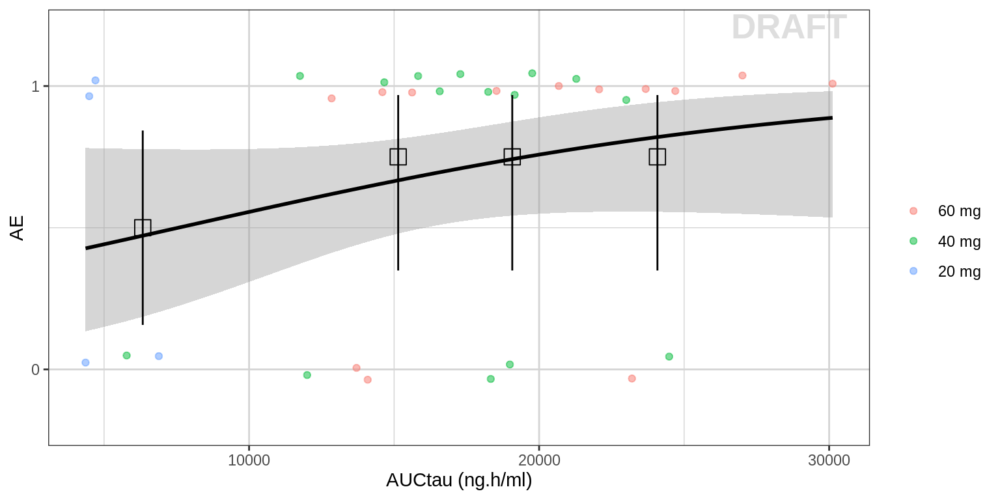
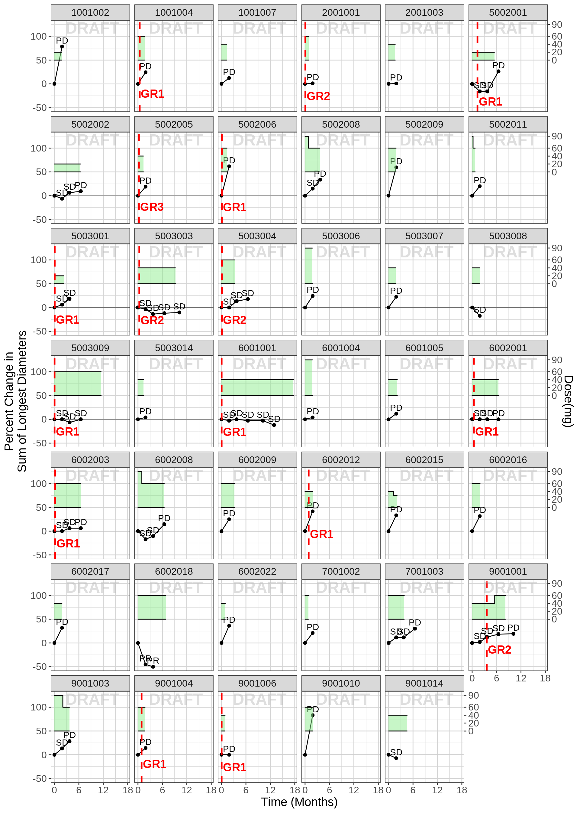

Safety Plots
Overview
This document contains plots for safety data as well as the R code that generates these graphs. These plots are not strictly exploratory plots as data from a PopPK model are used to generate some of the plots.
Setup
Load Dataset
The plots presented here are based on merged safety data with a popPK model generated parameters data (download dataset), as well as a dataset containing model-generated AUCs (download dataset). Data specifications can be accessed on Datasets and Rmarkdown template to generate this page can be found on Rmarkdown-Template.
auc <- read.csv("../Data/AUC_Safety.csv")
my.data <- read.csv("../Data/AE_xgx.csv")
my.data$DOSE_label <- paste(my.data$Dose,"mg")
my.data <- arrange(my.data, -Dose)
my.data$DOSE_label <- factor(my.data$DOSE_label,levels = c(paste(unique(my.data$Dose),"mg")))
# add binary 0 and 1 colun to the dataset
my.data$AE_binary <- as.numeric(as.character( plyr::mapvalues(my.data$AE,
c('Yes','No'),
c(1, 0)) ))
auc_my_data <- auc %>%
left_join(my.data ,by="SUBJID")
# Function to add number of subjects in each group
n_fun <- function(x){
return(data.frame(y = median(x)*0.01, label = paste0("n = ",length(x))))
}Exposure-safety plots
These plots are looking at the AUC (or Cmax and Ctrough) for patients with the AE and for those who don’t have the AE at each dose group. The number of the patients at each dose level is also included in the plots. With these type of plots we are looking to see if there is a correlation (or absence a correlation) between exposure and AE.
AUC vs Dose group by AE
gg <- ggplot(data= my.data,aes(x=factor(Dose), y=AUCAVE, fill=factor(AE))) +theme_bw()
gg <- gg + geom_boxplot(data=my.data,aes(x=factor(Dose),y=AUCAVE, fill=factor(AE)),outlier.shape = NA)
gg <- gg + geom_point(color="black",binaxis='y', stackdir='center',dotsize=0.5,
position=position_jitterdodge(0.27))
gg <- gg + guides(color=guide_legend(""))
gg <- gg + stat_summary(data=my.data, fun.data = n_fun, geom = "text",
fun.y=mean, position = position_dodge(width = 0.75))
gg <- gg + scale_fill_discrete(name="AE occurrence:")
gg <- gg + ylab("AUCtau (ng.h/ml)")
gg <- gg + xlab("Dose (mg)")
gg <- gg + theme(text = element_text(size=15))
gg
Explore AE vs AUC
Plot binary AE occurrence against AUC or Cmax.
gg <- ggplot(data = my.data, aes(y=AUCAVE,x=AE))+theme_bw()
gg <- gg + geom_jitter(data = my.data,
aes(color = DOSE_label), shape=19, width = 0.1, height = 0, alpha = 0.5)
gg <- gg + geom_boxplot(width = 0.5, fill = NA, outlier.shape=NA)
gg <- gg + guides(color=guide_legend(""),fill=guide_legend(""))
gg <- gg + coord_flip()
gg <- gg + xlab("AE") + ylab("AUCtau (ng.h/ml)")
gg
Probability of AE for each dose group
Plot binary AE occurrence against dose. Using summary statistics can be helpful, e.g. Mean +/- SE, or median, 5th & 95th percentiles. For binary response data, plot the percent responders along with binomial confidence intervals.
Here are some questions to ask yourself when looking at Dose-safety plots: Do you see any relationship? Does AE increase (decrease) with increasing dose?
gg <- ggplot(data = my.data, aes(x=Dose,y=AE_binary))+theme_bw()
gg <- gg + stat_summary(geom="errorbar",
fun.data = function(y){
data.frame(ymin = binom::binom.exact(sum(y), length(y), conf.level = 0.95)$lower,
ymax = binom::binom.exact(sum(y), length(y), conf.level = 0.95)$upper)
}, alpha = 0.5, size = 1, width= 0.2)
gg <- gg + stat_summary(geom="point", fun.y=mean, shape = 0)
gg <- gg + guides(color=guide_legend(""),fill=guide_legend(""))
gg <- gg + scale_y_continuous(labels=scales::percent) + ylab("Probability of AE (%)")
gg <- gg + xlab("Dose (mg)")
gg <- gg + geom_smooth( method = "glm",method.args=list(family=binomial(link = logit)), color = "black")
pp1 <- gg
## Same plot but on a log scale
pp2 <- gg + scale_x_log10(breaks=unique(my.data$Dose))
grid.arrange(pp1,pp2,nrow=1)Probability of AE by AUC
Plot AE against exposure. Include a logistic regression for binary data to help determine the shape of the exposuresafety relationship. Summary information such as mean and 95% confidence intervals by quartiles of exposure can also be plotted. Exposure and Cmax metric that you use in these pltots could be either be raw concentrations, or NCA or model-derived exposure metrics (e.g. Cmin, Cmax, AUC), and may depend on the level of data that you have available.
data_to_plot <- my.data
data_to_plot$AUC_bins <- cut(data_to_plot$AUCAVE, quantile(data_to_plot$AUCAVE, na.rm=TRUE), na.rm=TRUE)
data_to_plot <- data_to_plot[!is.na(data_to_plot$AUC_bins), ]
data_to_plot <- data_to_plot %>%
group_by(AUC_bins) %>%
mutate(AUC_midpoints = median(AUCAVE))
gg <- ggplot(data = data_to_plot, aes(x=AUCAVE,y=AE_binary))+theme_bw()
gg <- gg + geom_jitter(aes( color = DOSE_label), width = 0, height = 0.05, alpha = 0.5)
gg <- gg + geom_smooth( method = "glm",method.args=list(family=binomial(link = logit)), color = "black")
gg <- gg + stat_summary(aes(x=AUC_midpoints, y=AE_binary),geom = "errorbar",
fun.data = function(y){
data.frame(ymin = binom::binom.exact(sum(y), length(y), conf.level = 0.95)$lower,
ymax = binom::binom.exact(sum(y), length(y), conf.level = 0.95)$upper)
})
gg <- gg + stat_summary(aes(x=AUC_midpoints, y=AE_binary),shape=0,size=5, geom="point", fun.y = mean)
gg <- gg + guides(color=guide_legend(""),fill=guide_legend(""))
gg <- gg + ylab("AE") + scale_y_continuous(breaks=c(0,1)) + coord_cartesian(ylim=c(-0.2,1.2))
gg <- gg + xlab("AUCtau (ng.h/mL)")
gg
Boxplots of Exposure over time, with AE highlighted
The plot below shows time vs AUC from a pop PK model at each day. The colored dots corresponding to adverse events. It is not strictly an exploratory plot. But once you have a PopPK model, it is simple to generate this plot. Just plot the time vs the predicted AUC and color the time points red on days that an adverse event occurred.
data_to_plot <- my.data[!is.na(my.data$AETOXGRDN), ]
gg <- ggplot()+theme_bw()
gg <- gg + geom_jitter(data=auc[auc$AUC_day<30,],
aes(x=AUC_day, y=AUC_popPK/AUC_day, group=AUC_day),
color="grey", alpha = 0.5,
position=position_jitter(width=.1, height=0))
gg <- gg + geom_boxplot(data=auc[auc$AUC_day<30,],
aes(x=AUC_day, y=AUC_popPK/AUC_day, group=AUC_day),
outlier.shape = NA, fill = NA)
gg <- gg + geom_point(data=data_to_plot[data_to_plot$DAY<30,],
aes(x=DAY, y=AUC/DAY, color=factor(AETOXGRS)),size=2)
gg <- gg + scale_color_manual(breaks = c("GR1", "GR2", "GR3"),
values=c(rgb(1,0.5,0.5), rgb(0.75,0.25,0.25), rgb(0.5,0,0)))
gg <- gg + guides(color=guide_legend(""),fill=guide_legend(""))
gg <- gg + scale_x_continuous(breaks = seq(0, 30, by = 3))
gg <- gg + ylab("AUCtau (ng.day/ml)")
gg <- gg + xlab("Time (day)")
gg
Oncology individual plots of percent change from baseline, including dosing history, labeled by “Overall Response” and AE grade
These plots allow one to look for subtle trends in the individual trajectories with respect to the dosing history, safety events and efficacy as percent change of tunor size from baseline. The plots below make use of the following oncology datasets: RECIST and nmpk dataset (download here) and dose record dataset (download here)
# Read oncology efficacy data from the oncology efficacy
# page and combine them with safety data in this page
safety_data <- read.csv("../Data/AE_xgx.csv")
efficacy_data <- read.csv("../Data/Oncology_Efficacy_Data.csv")
dose_record <- read.csv("../Data/Oncology_Efficacy_Dose.csv")
efficacy_data$DOSE_label <- paste(efficacy_data$DOSE_ABC,"mg")
efficacy_data$DOSE_label <- factor(efficacy_data$DOSE_label,levels = c(paste(unique(efficacy_data$DOSE_ABC),"mg")))
efficacy_data.monotherapy = efficacy_data %>% filter(COMB=="Single")
efficacy_data.combo = efficacy_data %>% filter(COMB=="Combo")
# Dose record data preparation for making step function plot
# in order to show any dose reduction during the study
# the idea is that at each time point, you have both the current dose and the previous dose
# the dplyr::lag command implements this
data_areaStep <- bind_rows(old = dose_record,
new = dose_record %>%
group_by(IDSHORT) %>%
mutate(DOSE = lag(DOSE)),
.id = "source") %>%
arrange(IDSHORT, TIME, source) %>%
ungroup() %>%
mutate(DOSE = ifelse(lag(IDSHORT)!=IDSHORT, NA, DOSE),
TIME = TIME/24) #convert to days
data_areaStep.monotherapy = filter(data_areaStep,COMB=="Single")
# calculate average dose intensity up to the first assessment:
# "TIME==57"" is the first assessment time in this dataset
first.assess.time = 57
dose_record <- dose_record %>%
group_by(IDSHORT) %>%
mutate(ave_dose_intensity = mean(DOSE[TIME/24 < first.assess.time]))
dose_intensity <- dose_record[c("IDSHORT","COMB","ave_dose_intensity")]
dose_intensity <- subset(dose_intensity, !duplicated(IDSHORT))
# This part is optional to label "OR" in the plot
# "OR" can be substituted with other information, such as non-target, new target lesions
# make the OR label for the plot
safety_label <- safety_data %>%
select(SUBJID, DAY, AETOXGRS, Dose)
colnames(safety_label)[2] <- "TIME"
colnames(safety_label)[4] <- "DOSE_ABC"
safety_label$AETOXGRS <- as.character(safety_label$AETOXGRS)
safety_label <- safety_label[!safety_label$AETOXGRS =="",]
efficacy_AE_label <- efficacy_data %>%
select(SUBJID, TIME, psld, DOSE_ABC)
efficacy_AE_label <- merge(safety_label,efficacy_AE_label, by = c("SUBJID", "TIME","DOSE_ABC"),
all.x=T, all.y=T)
subj <- efficacy_AE_label %>%
subset(!is.na(psld)) %>%
group_by(SUBJID) %>%
mutate(CountNonNa = length(psld))
subj <- c(unique(subset(subj, CountNonNa>1, "SUBJID")))
efficacy_AE_label <- efficacy_AE_label %>%
subset(SUBJID%in%subj$SUBJID)%>%
group_by(SUBJID) %>%
mutate(ValueInterp = na.approx(psld,TIME, na.rm=FALSE))
efficacy_AE_label <- efficacy_AE_label[!is.na(efficacy_AE_label$AETOXGRS),]
efficacy_AE_label <- efficacy_AE_label[!is.na(efficacy_AE_label$ValueInterp),]
efficacy_AE_label <- subset( efficacy_AE_label, select = -psld )
colnames(efficacy_AE_label)[5] <- "psld"
colnames(efficacy_AE_label)[1] <- "IDSHORT"
efficacy_data.label <- efficacy_data %>%
group_by(SUBJID) %>%
mutate(label_psld = as.numeric(ifelse(TIME==TIME_OR , psld,""))) %>%
filter(!(is.na(label_psld) | label_psld==""))
dose.shift = 50
dose.scale = 1.2
data_areaStep.monotherapy = data_areaStep.monotherapy %>%
mutate(DOSE.shift = DOSE/dose.scale+dose.shift)
dose.unique = c(0,unique(efficacy_data.monotherapy$DOSE_ABC))
gg <- ggplot(data = efficacy_data.monotherapy)
gg <- gg + geom_point(mapping = aes(y= psld, x= TIME))
gg <- gg + geom_text(data= efficacy_data.label,aes(y= label_psld, x= TIME_OR, label=OR), vjust=-.5)
gg <- gg + geom_hline(aes(yintercept = 0),size=0.1, colour="black")
gg <- gg + geom_line(mapping = aes(y= psld, x= TIME))
gg <- gg + geom_ribbon(data= data_areaStep.monotherapy,
aes( ymin = 50, ymax = DOSE.shift , x= TIME),
fill="palegreen2", color = "black", alpha=0.5 )
gg <- gg + geom_text(data= efficacy_AE_label,
aes(y= psld, x= TIME, label=AETOXGRS), colour="red",fontface=2,
size=5, show.legend = F, hjust=-0.05, vjust=2)
gg <- gg + geom_vline(data= efficacy_AE_label,
aes(xintercept= TIME),
size=1, linetype="dashed", colour="red")
gg <- gg + facet_wrap(~IDSHORT, ncol=6)
gg <- gg + scale_y_continuous(
sec.axis = sec_axis(~(.-dose.shift)*dose.scale, name = "Dose(mg)", breaks = dose.unique))
gg <- gg + labs(y = "Percent Change in\nSum of Longest Diameters",
x = "Time (months)",
colour = "Parameter")
gg <- gg + scale_x_units(units.input = "day",units.output="month",t.start = 0,t.end = 15, increment = 3)
gg <- gg + theme(text = element_text(size=15))
gg
R Session Info
sessionInfo()## R version 3.4.3 (2017-11-30)
## Platform: x86_64-pc-linux-gnu (64-bit)
## Running under: Red Hat Enterprise Linux Server 7.4 (Maipo)
##
## Matrix products: default
## BLAS/LAPACK: /CHBS/apps/intel/17.4.196/compilers_and_libraries_2017.4.196/linux/mkl/lib/intel64_lin/libmkl_gf_lp64.so
##
## locale:
## [1] LC_CTYPE=en_US.UTF-8 LC_NUMERIC=C
## [3] LC_TIME=en_US.UTF-8 LC_COLLATE=en_US.UTF-8
## [5] LC_MONETARY=en_US.UTF-8 LC_MESSAGES=en_US.UTF-8
## [7] LC_PAPER=en_US.UTF-8 LC_NAME=C
## [9] LC_ADDRESS=C LC_TELEPHONE=C
## [11] LC_MEASUREMENT=en_US.UTF-8 LC_IDENTIFICATION=C
##
## attached base packages:
## [1] grid stats graphics grDevices utils datasets methods
## [8] base
##
## other attached packages:
## [1] bindrcpp_0.2 haven_1.1.0 readr_1.1.1 readxl_1.0.0
## [5] xtable_1.8-2 tidyr_0.7.2 caTools_1.17.1 zoo_1.8-0
## [9] dplyr_0.7.4 ggplot2_2.2.1 gridExtra_2.3
##
## loaded via a namespace (and not attached):
## [1] Rcpp_0.12.14 cellranger_1.1.0 compiler_3.4.3 pillar_1.0.1
## [5] plyr_1.8.4 bindr_0.1 forcats_0.2.0 bitops_1.0-6
## [9] tools_3.4.3 digest_0.6.13 evaluate_0.10.1 tibble_1.4.1
## [13] gtable_0.2.0 lattice_0.20-35 pkgconfig_2.0.1 rlang_0.1.6
## [17] yaml_2.1.16 stringr_1.2.0 knitr_1.18 hms_0.4.0
## [21] htmlwidgets_0.9 rprojroot_1.3-1 DT_0.2 glue_1.2.0
## [25] R6_2.2.2 binom_1.1-1 rmarkdown_1.8 purrr_0.2.4
## [29] magrittr_1.5 codetools_0.2-15 backports_1.1.2 scales_0.5.0
## [33] htmltools_0.3.6 rsconnect_0.8.5 assertthat_0.2.0 colorspace_1.3-2
## [37] labeling_0.3 stringi_1.1.3 lazyeval_0.2.1 munsell_0.4.3